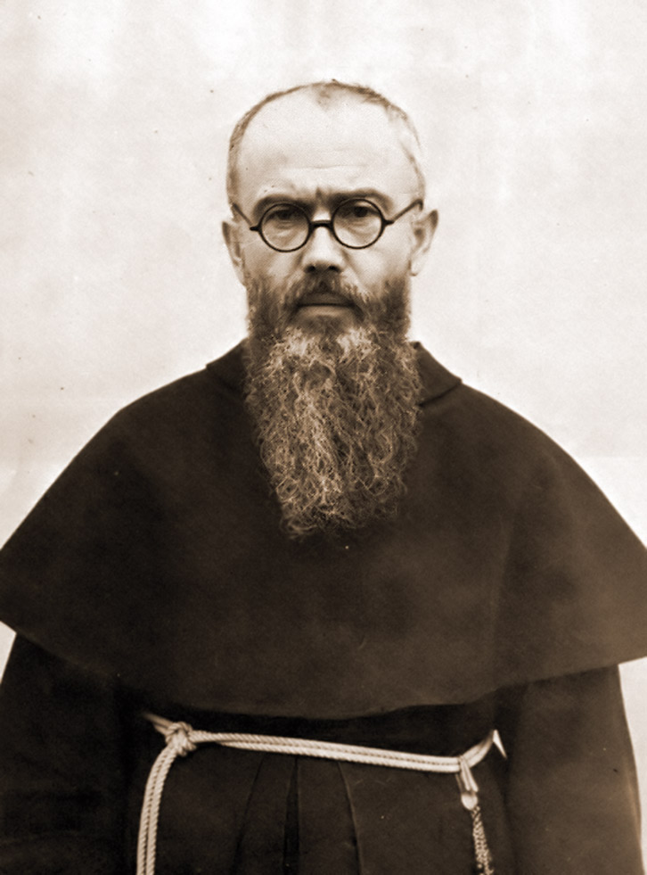

Movimento Marianíssimo de Sacerdotes e Leigos
Movimento Marianíssimo de Sacerdotes e Leigos pelo Triunfo dos Corações Unidos de Jesus e Maria
Tudo por Jesus através de Maria, a exemplo de São José e com o auxílio dos Santos Anjos.
Lema do MPL
Prefácio
Um dos mistérios mais profundos e belos da nossa fé é a íntima união dos Sagrados Corações de Jesus e Maria.
Assim como em Adão e Eva duas vontades se uniram na desobediência e trouxeram a culpa sobre todo o género humano, assim em Jesus e Maria duas vontades se uniram na perfeita obediência e trouxeram a salvação à humanidade.
A pequena Jacinta de Fátima disse pouco antes da sua morte à prima Lúcia:
«Dizei a todos que Deus nos concede as graças através do Coração Imaculado de Maria, que as pessoas devem pedi-las, que o Coração de Jesus deseja que o Coração da nossa Mãe Celeste seja honrado ao Seu lado. Peça-se a paz à nossa Mãe Celeste, pois Deus lha confiou.»
A aparição do Anjo prometeu às três crianças que os Corações de Jesus e Maria atenderiam as suas orações. Assim a devoção ao Coração de Jesus Nosso Senhor e à Sua Mãe Imaculada completa a veneração dos Sagrados Corações Unidos de Jesus e Maria, para preparar assim o seu triunfo em todo o mundo.
Alegro-me de todo o coração pelo recém-fundado Movimento Marianíssimo de Sacerdotes e Leigos, que se propôs como alto objectivo participar neste triunfo. Que Deus conceda a esta pequena comunidade a graça de crescer constantemente e de permanecer fiel ao seu carisma fundador através de todas as tempestades e tribulações.
Sobretudo em meio à crescente confusão na Igreja, devida aos desastrosos esforços de se conformar ao espírito deste mundo, o ensinamento de São Cirilo de Alexandria deve ser o nosso princípio inviolável:
«Se por medo do incómodo nos retraíssemos de falar a verdade para glória de Deus, como ousaríamos celebrar as lutas e triunfos dos mártires na presença do povo cristão, cuja glória se funda precisamente em ter realizado na sua vida a palavra: 'Combatei até à morte pela verdade.'»
(Sir 4,28 | Epistula 9)
Março de 2022, na Solenidade de São José
Athanasius Schneider, Bispo Auxiliar da Arquidiocese de Santa Maria em Astana
O MPL Apresenta-se
O nosso Movimento Marianíssimo de Sacerdotes e Leigos pelo Triunfo dos Sagrados Corações Unidos de Jesus e Maria (MPL), fundado a 8 de Dezembro de 2021, orienta-se inteiramente na sua direcção espiritual à forma original da Milícia da Imaculada fundada por São Maximiliano Maria Kolbe. Por isso, escolhemos este grande apóstolo de Maria e combatente contra todas as heresias, juntamente com a Mãe de Deus Maria, Mãe da Igreja, e São José, Patrono da Igreja, como patronos especiais do nosso novo movimento apostólico.
«Ó Imaculada, quando reinareis enfim nos corações de todos e de cada um?
Quando enfim todos os habitantes da terra Vos reconhecerão como Mãe e o Pai Celeste como Pai?»
– São Maximiliano M. Kolbe
«Todo aquele que fizer a vontade de Meu Pai é Meu irmão, Minha irmã e Minha mãe.»
(Mt 12,50)
Objectivos do MPL
Confissão corajosa da verdadeira fé católica
A veneração dos Sagrados Corações Unidos de Jesus e Maria e a promoção do seu triunfo em todo o mundo
Imitação da Sagrada Família de Nazaré mediante uma vida na Vontade Divina, para contribuir para a renovação da Igreja
Reforço e apoio mútuo no caminho comum de fé, para resistir à grande tentação de se conformar ao mundo e aos seus princípios (cf. Rm 12,2; 2 Tm 4,3-5)
Oferecer apoio e orientação a quem busca a verdade
Catequese
Apostolado e obra missionária
Meios concretos
Os seguintes pontos mostram-nos como podemos participar concretamente no apostolado pelo triunfo dos Sagrados Corações Unidos de Jesus e Maria:
Ancorar a própria vida inteiramente à vontade de Deus e cultivar uma relação íntima com Deus
Recepção regular dos santos sacramentos
Consagração total à Imaculada segundo a Regra da MI (ver páginas 10 e 11)
Consagração aos Sagrados Corações Unidos de Jesus e Maria
Oração vicária, sacrifício e sofrimento
(Rezamos especialmente pelo Santo Padre, bispos, sacerdotes, todas as pessoas consagradas e a santificação das famílias. Do mesmo modo, a protecção da vida bem como a conversão de todos os hereges, incrédulos e inimigos da santa Igreja devem ser uma especial intenção de oração.)Prática quotidiana do Rosário
Proclamação e distribuição de escritos
Distribuição da Medalha Milagrosa
Obras de caridade e ofertas

A Vencedora de Todas as Heresias
«Ela destrói as heresias, não os hereges, pois ama-os e deseja a sua conversão. Precisamente porque os ama, liberta-os da heresia e destrói as suas falsas opiniões e convicções.»
– São Maximiliano M. Kolbe
Maria quer conduzir cada alma à união nupcial com Cristo. Mas Lúcifer e os seus seguidores querem impedir o reinado de Jesus nas almas. Os seus empreendimentos visam apagar o nome de Jesus Cristo de toda a terra. Está determinado a destruir todos os que crêem neste nome.
O primeiro alvo dos seus ataques é a Igreja Católica, pois à Igreja Católica Deus confiou todos os tesouros espirituais para toda a humanidade. Para realizar os seus planos destrutivos, Satanás faz uso particular da Maçonaria. Esta seita secreta fundada em 1717 não recua perante nenhuma crueldade para apagar completamente a Igreja Católica e toda a fé no mundo sobrenatural.
Contudo a Mãe de Deus não permanece inactiva. Com amor maternal luta pela salvação das Suas ovelhas desgarradas. Em 1917 a Virgem Imaculada apareceu de Maio a Outubro a três pastorinhos em Fátima, para oferecer o último meio de salvação: o Seu Coração Imaculado. Maria pediu oração e sacrifício pela conversão dos pecadores. Desejou o Rosário e a consagração ao Seu Coração Imaculado, sobretudo a consagração da Rússia, para que se convertesse e não propagasse as suas ideias comunistas e de esquerda no mundo.
No mesmo mês em que a Imaculada deu prova com o milagre do sol em Fátima de que era efectivamente Ela que ali aparecia, São Maximiliano M. Kolbe foi inspirado a fundar a Milícia da Imaculada. Sem conhecimento dos acontecimentos em Fátima, tornou-se o instrumento dos planos da Mãe de Deus. A Sua visão era consagrar todas as almas do mundo à Imaculada e através de Maria conquistar todos os corações para Jesus.
(O Reino da Divina Vontade Vem Através de Maria, Vol. 10 de Dr. Gertraud Pflügl, Gamming 2019, p. 137.)
Qual era a razão do seu fervoroso zelo? Foi profundamente abalado a 13 de Outubro de 1917 como jovem estudante em Roma quando assistiu a procissões maçónicas que cantavam hinos em honra de Satanás, marchando em direcção ao Vaticano.
Nos estandartes leu a inscrição:
«Satanás reinará no Vaticano e o Papa será o seu servo.»
Ele escreve:
«Quando a Maçonaria apareceu cada vez mais em público em Roma e desfraldou os seus estandartes diante das janelas do Vaticano, representando São Miguel Arcanjo espezinhado e derrotado por Lúcifer, e distribuiu panfletos que insultavam o Santo Padre, nasceu a ideia de fundar uma associação para combater a Maçonaria e os outros servos de Lúcifer.»
(A Imaculada Nosso Ideal de Pe. Karl Stehlin, Mörlenbach 2017, p. 50.)
A Maçonaria espalha as suas ideologias através de todos os meios de comunicação, jornais e livros. Todas as tendências e programas blasfemos têm origem principalmente na sua oficina. Pe. Kolbe estava muito bem informado e anotou:
«Quando olhamos à nossa volta, percebemos o alarmante desaparecimento da moralidade, especialmente em meio aos jovens. Aparecem associações verdadeiramente infernais. (…) Trabalham febrilmente, segundo as resoluções dos Maçons: 'Venceremos a Igreja Católica não com argumentos, mas com a perversão dos costumes!'»
(O Reino da Divina Vontade Vem Através de Maria, p. 12, 13.)
No século XIX, forças hostis penetraram em todas as áreas da vida. Infiltraram-se mesmo na Santa Igreja para espalhar as ideias e o espírito do liberalismo em todas as suas formas nos seminários, universidades e mosteiros.
Não apenas um erro, mas todas as heresias que jamais existiram foram propagadas. No modernismo todas as heresias estão empacotadas. Todos os erros que jamais atacaram e minaram a Igreja unem-se aqui e avançam num assalto geral para destruir a Igreja a partir de dentro.
O ecumenismo mina a Verdade Divina, que foi confiada única e exclusivamente à Igreja Católica Romana pelo seu fundador, Nosso Senhor Jesus Cristo. Os frutos são inegáveis: A Igreja Católica procura conformar-se às outras denominações cristãs. A relação das religiões entre si está a ser redefinida, como se todas as religiões adorassem o mesmo Deus e fossem vias de salvação.
Durante mais de dois séculos os Papas avisaram contra estas falsas ideias. Contudo os inimigos ocuparam cada vez mais posições-chave na política e também na Igreja. Após o Concílio Vaticano II, ideias estranhas prevaleceram em Roma: ideias teológicas, políticas, filosóficas, democráticas completamente alienígenas à natureza da Igreja. Agem no seu seio como veneno destrutivo.
E precisamente em resposta a tudo o que foi descrito, São Maximiliano M. Kolbe fundou a Milícia da Imaculada. A MI está plenamente inspirada pelo espírito da «Sociedade da Mãe de Deus» como Grignion a descreveu. Abrange leigos e pessoas consagradas. As regras são tão breves e simples que podem ser vividas em cada família, cada comunidade e cada comunidade religiosa!
Numa carta a um irmão em Roma, Pe. Maximiliano escreve em 1918:
«Caríssimo Irmão! Escrevo este postal no dia da revelação da Virgem Imaculada Maria da Medalha Milagrosa […] A nossa Suprema Senhora Imaculada dignou-se, após um ano de expectativa e dúvida e incerteza da nossa parte, determinar a regra para a Sua 'Milícia' do seguinte modo:»
Milícia da Imaculada
«Ela esmagará a tua cabeça.»
(Gn 3,15)
«Só Tu venceste todas as heresias em todo o mundo.»
(Liturgia da Madonna)
I. Objectivo
A conversão dos pecadores, hereges, cismáticos, etc., mas especialmente dos Maçons; e a santificação de todos, sob o reinado e através da mediação da Imaculada.
II. Condições
Consagração total à Imaculada, dando-se como instrumento nas Suas mãos.
Usar a Medalha Milagrosa.
III. Meios
Invocar a Imaculada com esta oração jaculatória o mais frequentemente possível cada dia:
«Ó Maria, concebida sem pecado, rogai por nós que recorremos a Vós, e por todos os que não recorrem a Vós, especialmente pelos Maçons.»Aplicar todos os meios lícitos o mais possível, nas várias condições e circunstâncias da vida, nas oportunidades que surgem: isto é deixado ao zelo e prudência de cada um; mas o meio especial é a distribuição da Medalha Milagrosa.
(Ibid. p. 154, 155)
As regras foram escritas por Pe. Kolbe em latim, a língua da santa Igreja, por assim dizer a língua eternamente válida. (Ver p. 12)
A atracção de Pe. Kolbe foi tal que dificilmente há algo comparável: As suas conferências foram cedo tão concorridas que os maiores salões ficaram pequenos. Publicou um opúsculo do qual surgiu o «Cavaleiro da Imaculada». Esta revista mensal para membros da Milícia atingiu uma tiragem de um milhão na Polónia em plena Grande Depressão.
Fundou em 1927 a «Cidade da Imaculada», que cresceu em 12 anos (1927 a 1939) de 24 para 762 monges, mais quase 200 postulantes. No Japão, uma terra quase inteiramente pagã, construiu em poucos anos o maior apostolado cristão ali existente – embora lá tenha chegado em 1930 sem dinheiro e sem conhecimento da língua japonesa. Em Nagasaki fundou uma segunda «Cidade da Imaculada» («Mugenzai no sono»): Também ali, editoras, estações missionárias e várias comunidades monásticas.
(O Reino da Divina Vontade Vem Através de Maria, p. 157)
«Podemos viver em barracas e usar roupa remendada, a nossa comida pode ser modesta, mas as nossas prensas de impressão, que servem para espalhar a glória de Deus, devem ser as melhores e mais novas.»
– São Maximiliano M. Kolbe
A Fonte da Alegria
São Maximiliano M. Kolbe foi ordenado sacerdote a 28 de Abril de 1918. Profundamente impregnado pela dignidade do seu estado, refugiou-se na Imaculada. Ela introduziu-o ao Mistério do Santo Sacrifício da Missa e ao Mistério da Santíssima Eucaristia. O seu amor por Jesus nestes mistérios tocou as fibras mais íntimas do seu coração.
A 8 de Setembro de 1932, Pe. Maximiliano escreve a um irmão:
«Quantas vezes sonho que na Cidade da Imaculada o Salvador seja adorado dia e noite na custódia. Quanta bênção os adoradores invocariam do céu sobre cada cópia recém-impressa do nosso 'Cavaleiro', sobre cada alma que em algum lugar do mundo se junta à Milícia...»
E a cada «Cavaleiro» clama:
«Amai a Imaculada com todo o coração, recorrei frequentemente a Ela com orações jaculatórias e Ela ensinar-vos-á a retribuir o amor do Salvador, que Ele testemunhou por vós na Cruz e no Santíssimo Sacramento do Altar, com amor sem limites.»
Durante uma estadia de cura em Nieszawa passava frequentemente por uma igreja protestante. Escreve ao seu irmão como reza fervorosamente pela conversão do pastor e deseja ardentemente que a igreja se torne uma casa de Deus católica, para que o Salvador Eucarístico possa ser adorado dia e noite.
No processo informativo, Pe. Lukas Kuszba OFMConv relata:
«Quando se o observava durante a adoração do Santíssimo Sacramento, não se podia desviar o olhar dele, tão fascinante era o seu rosto. Durante a adoração ajoelhava-se geralmente diante dos degraus do altar. Observei Pe. Maximiliano várias vezes enquanto celebrava a Santa Missa: Parecia brilhar com uma luz que não é desta terra. Estava cheio de mansidão, devoção e recolhimento.»
Os últimos dias da sua vida no campo de concentração foram o culminar do seu sacerdócio. Mesmo que já não lhe fosse permitido celebrar a Santa Missa, era no seu todo o «pastor de almas». As testemunhas relataram repetidamente o seu zelo apostólico, o seu espírito de fé, o seu sacrifício de vida e a alegria naquele sacrifício.
A fonte desta alegria e dedicação, disse ele mesmo, é:
«A Imaculada e o Sacratíssimo Coração de Jesus no Santíssimo Sacramento.»
E partilhou esta alegria com todos à sua volta. Era como um íman que nos atraía a Deus e à Mãe de Deus. Frequentemente nos falava da misericórdia divina. Queria converter todo o campo... Rezava incessantemente pelos pecadores, pelos inimigos. Quando podia, dava as suas rações de comida a outras pessoas esfomeadas e assumia o trabalho mais pesado em lugar dos outros.
(A Imaculada Nosso Ideal, p. 87-89)
«Conquistar todo o mundo e cada alma, presente hoje ou até ao fim do mundo, para a Imaculada, e através dela para o Sacratíssimo Coração de Jesus.»
– São Maximiliano M. Kolbe
Após a morte heróica de Maximiliano M. Kolbe, a Cavalaria da Imaculada espalhou-se de forma admirável por todo o mundo. Na véspera do Concílio Vaticano II, contava mais de 4 milhões de membros e exercia a sua bênção em todos os continentes. Depois veio o Concílio com a grande revolução e com ele o «Aggiornamento», a abertura ao mundo moderno e sem Deus, de que a Milícia da Imaculada também foi vítima. Após várias modificações, foram publicados em 1997 os novos estatutos definitivos aprovados pela Santa Sé, que infelizmente já não correspondem ao ideal original de São Maximiliano.
(Cf. A Imaculada Nosso Ideal p. 219)
Na fonte da vida,
à beira do tempo,
fluem as graças
do mar da eternidade.
As graças que fluem
em inumeráveis horas
estão ligadas ao decreto
do Pai.
Não regressam,
passam depressa.
Nem sequer queixar-se e chorar
as fará voltar.
Se as desperdiçares
com mente insensata,
então estão perdidas
e idas para sempre.
Assim não deixes fluir,
as graças da vida,
como água além de ti apenas
em vão.
Como peixes na água
deves sempre nadar
na Vontade Divina,
com todos os sentidos.
Através da fé e esperança,
oração e amor,
e desprezando o pecado
com raízes e rebentos.
Isto Maria ensina-te,
a Mãe do Senhor,
através de quem Ele concede graças
em torrentes tão de bom grado.
(Irmãs Capuchinhas de Perpétua Adoração,
Santa Maria Loreto, Salzburgo)
As Armas Poderosas dos Filhos de Maria
Oração
Assim como o sol se reflecte no mar, assim a glória de Deus brilha sobre nós como reflexo quando vivemos e rezamos na Sua presença. Portanto, a oração sincera é o meio mais poderoso para fazer frutificar o fulgor divino plantado em nós. A oração é a mais alta realização de que o homem é capaz. Assim se exprimiu Santa Edith Stein.
Quando falamos com Deus na oração, Ele transforma o nosso rezar e todas as nossas acções, que Lhe oferecemos através da nossa boa intenção, em graças para nós e para todos os que Deus quer abençoar através de nós.
Rezemos, carreguemos a Cruz, e amemos todas as almas sem excepção, amigos e inimigos, muito...
Não temo nem a fome nem o sofrimento. Por Maria estou pronto a tudo...
Do céu trabalharemos então nos nossos carrascos com ambas as mãos. Queremos os seus corações.
Quem está verdadeiramente consagrado à Mãe de Deus alcança sem hesitação, onde quer que esteja, os corações das pessoas, mesmo as piores, e salva inumeráveis almas.
(São Maximiliano M. Kolbe)
Sobretudo no mundo frenético de hoje, o apostolado das orações jaculatórias, a que o Santo nos incentiva, é a melhor forma de permanecer ligados a Deus e também de fazer muito pela salvação das almas. As orações jaculatórias são como balas de metralhadora com que combatemos o inimigo. Sem o saber, a graça do Senhor e a misericórdia da Imaculada são invocadas sobre o nosso próximo até ao dia em que é dominado e se prostra diante do seu Criador e Redentor.
Na MI recomenda-se em especial a seguinte jaculatória:
Jesus, Maria, amo-Vos, salvai as almas!
É especialmente valiosa porque exprime tanto os dois santos nomes de Jesus e Maria como o amor por Eles, bem como o amor pelas almas. Neste sentido Pe. Maximiliano escreve numa carta:
A melhor devoção à Imaculada não é recitar muitas orações, mas o simples relacionamento íntimo do filho com a Mãe, que encontra a sua melhor expressão em orações jaculatórias breves mas muito íntimas e muito frequentemente repetidas.
Deus liga graças especiais ao Rosário, pelo qual a Mãe de Deus nos pede tão insistentemente. Esta oração tantas vezes ridicularizada é a corrente que ata Satanás. Hoje diz-se: O Santo Rosário é uma oração contemplativa. Mas é ainda mais essencialmente: é uma arma espiritual. As suas contas são «munições»! Não admira que os inimigos da santa Igreja temam esta oração mais do que todas as armas físicas dos cristãos! A Ir. Lúcia disse em 1957 na sua entrevista com Pe. Fuentes:
Não há problema, de qualquer tipo e por maior que seja, que não possa ser resolvido com o Rosário!
(O Reino da Divina Vontade Vem Através de Maria, p. 14)
Submissos à Senhora
Maria é o caminho de Deus para o homem e do homem para Deus. Assim decretou a Divina Sabedoria. Assim como Jesus veio aos homens através da Sua Mãe, assim os homens vêm a Deus através dela. Em São Luís Maria Grignion de Montfort (1673–1716) e em São Maximiliano M. Kolbe (1894–1941) Ela escolheu zelosos apóstolos de Maria para abrir aos homens a riqueza espiritual da total consagração a Jesus através de Maria. Através desta consagração todas as graças que foram plantadas em nós como semente no Baptismo podem chegar à plena maturação. Por isso, a consagração vivida a Maria é por assim dizer o comboio expresso para a santidade (10). E a santidade é uma das armas mais poderosas, contra a qual todo o poder espiritual do inferno é completamente impotente, porque nos ancora inteiramente na Vontade Divina.
Neste sentido Luisa Piccarreta explica:
Esta é a essência toda da santidade: Conformidade da nossa vontade inteira com a vontade de Deus. A alma que resolveu conformar a sua própria vontade à vontade de Deus sente-se indizivelmente feliz. Nela há paz e serenidade, possui um fundamento inabalável: Deus. (…) Não percamos a paz quando os sentimentos arrefecem. O que importa é a vontade, e só a vontade. Pelo contrário: Quanto mais a natureza se rebela, maiores serão os méritos que acumulamos.
(O Reino da Divina Vontade Vem Através de Maria, p. 137, 140)
Assim Maria pode através das almas consagradas a Ela esmagar a cabeça da serpente apagando todos os erros em todo o mundo. Pode fazê-lo na medida em que cada um se deixa transformar por Ela. Esta transformação acontece através dos muitos pequenos actos que fazemos diariamente. Deles Pe. Maximiliano diz:
A vida tem tanto valor quanto actos de amor de Deus a preenchem. Quando a alma faz seus os seus actos para a Imaculada, passa-os a Deus como seus. Desta forma os nossos actos de amor a Deus recebem toda a sua beleza.
(Konferencje Świętego Maksymiliana Marii Kolbego, Niepokalanów 1990)
Nota:
10 Quando nos consagramos à Mãe de Deus para fazer tudo com Maria, em Maria, através de Maria e por Maria, ela conduz-nos seguramente à total consagração a Jesus. Ao mesmo tempo, através desta consagração colocamos os nossos bens interiores e exteriores, na verdade mesmo o valor de todas as nossas boas obras, nas mãos de Maria, para que ela os preserve, aumente e embeleze. O que assim confiamos a Maria não pode ser-nos tirado por nenhum homem, pelo maligno inimigo ou pela nossa própria fraqueza. Além disso, exercitamos assim a caridade cristã em alto grau, porque permitimos a Maria dispor dos nossos bens espirituais para os vivos e os mortos. (Cf. São L. M. Grignion de Montfort, O Livro de Ouro, Feldkirch 1987, p. 233–238)
Sacrifício
Como o ouro no fogo, assim o amor deve ser purificado no sacrifício. Pe. Maximiliano confirma isto pela sua própria experiência:
Nada nos une tanto com a Imaculada e nos fortalece no amor como o amor unido ao sofrimento por amor. Exactamente neste caminho de sofrimento podemos convencer-nos se realmente Lhe pertencemos sem reservas. Recordemo-nos, o amor vive e alimenta-se de sacrifícios.
(Fonte: A Imaculada Nosso Ideal, p. 149, 150, 151, 153)
E o que nos diz a Mãe de Deus a 19 de Agosto de 1917 em Fátima?
Rezai e sacrificai-vos, pois tantas almas vão para a perdição porque não há ninguém que reze e ofereça sacrifícios por elas.
(Fonte: O Reino da Divina Vontade Vem Através de Maria, p. 137, 140)
A Medalha Milagrosa da Imaculada
Em 1830 Maria apareceu a Santa Catarina Labouré na Rue du Bac e revelou-se como Mediadora de todas as graças. Dos anéis cravejados de jóias com que estavam adornadas as mãos da Beatíssima Virgem saíram raios luminosos tais que toda a figura da Mãe de Deus estava envolvida em luz brilhante. A Virgem santíssima explicou a Santa Catarina:
Os raios são um símbolo das graças que derramo sobre aqueles que mas pedem. Com isso fez-me compreender quão misericordiosa é para todos os que a invocam, quantas graças concede a todos os que mas pedem, e que alegria é para Ela quando pode dar-nos estas graças. Vi também que de algumas destas jóias não saíam raios. Fiquei muito admirado com isto. Depois ouvi a beatíssima Virgem dizer:
As jóias que não enviam raios simbolizam aquelas graças que se negligencia pedir-me. [...] À volta da aparição da beatíssima Virgem formou-se uma moldura oblonga redonda, na qual se podia ler em letras de ouro:
Ó Maria, concebida sem pecado, rogai por nós que recorremos a Vós!
Depois ouvi clara e distintamente uma voz que me disse:
Mandai cunhar uma medalha segundo este modelo. Todas as pessoas que a usarem obterão grandes graças. As graças serão abundantes para aqueles que a usarem com confiança ao pescoço. Nesse momento a imagem pareceu voltar-se, e vi o reverso da medalha. Ali vi a letra M, encimada por uma cruz apoiada numa barra. Sob o M vi os Sacratíssimos Corações de Jesus e Maria, o primeiro rodeado por uma coroa de espinhos, o segundo trespassado por uma espada.
(Santa Catarina Labouré e a Medalha Milagrosa da Imaculada de Dr. Maria Cuylen, p. 31, 32)
Após um exame de dois anos de todos estes acontecimentos, o Arcebispo de Paris deu permissão para fazer cunhar a medalha. A partir daí um torrente de graças começou a espalhar-se por todo o mundo, pois a medalha era desejada em todo o lado. Esta procissão triunfal da Mãe de Deus mostrou-se através de inumeráveis graças milagrosas, conversões e curas, de modo que cedo se falava apenas da Medalha «Milagrosa».
Mas mesmo hoje o torrente de graças não cessa, antes cresce mais do que nunca. Nós seres humanos não somos só espírito mas também corpo. Portanto, precisamos de sinais exteriores que tragam à luz a disposição interior. Pe. Maximiliano explica:
A Medalha Milagrosa é o sinal exterior da interior consagração total à Imaculada.
(Opúsculo MI 1938)
Frequentemente contou aos seus irmãos acontecimentos bastante extraordinários que ele próprio tinha experimentado com a Medalha Milagrosa. Por exemplo, durante uma das suas estadias de cura em Zakopane tentou converter um jovem livre-pensador que orgulhosamente se chamava «herege»:
Todos os argumentos foram em vão. Contudo, por cortesia aceitou a Medalha Milagrosa. Depois sugeri-lhe que fosse confessar-se. «Não estou preparado. Absolutamente não!», foi a resposta. Mas no mesmo momento caiu de joelhos, como se compelido por um poder superior. A confissão começou, o jovem chorou como uma criança. A Imaculada tinha vencido.
Naturalmente não era a medalha como objecto físico a causa desta maravilhosa mudança no coração humano, mas a Imaculada, que liga as Suas graças especiais ao uso da Medalha Milagrosa. E houve muitos e muitos tais acontecimentos na vida de São Maximiliano. Por isso:
Distribui a medalha sempre que possível: às crianças, para que a usem sempre ao pescoço, a velhos e jovens, para que tenham força suficiente sob a sua protecção para resistir às tentações e armadilhas que os assaltam especialmente nos nossos tempos. E também àqueles que não vão à igreja, que têm medo de se confessar, que zombam das práticas religiosas, que riem das verdades da fé, que estão mergulhados no pântano moral ou vivem na heresia fora da Igreja – oferecei a medalha da Imaculada a todos estes e pedi-lhes que a usem, mas depois implorai também fervorosamente à Imaculada pela sua conversão.
(A Imaculada Nosso Ideal, p. 155-157)
Orações Especiais do MPL
Consagração Total a Maria
Ó Imaculada, Rainha do céu e da terra, Refúgio dos pecadores e nossa Mãe, que nos amais tanto e a quem Deus confiou toda a ordem da misericórdia!
Eu, N., pecador infiel, lanço-me aos Vossos pés e Vos suplico do fundo do meu coração: Dignai-Vos aceitar-me total e inteiramente como Vossa posse e propriedade. Fazei de mim o que quiserdes, com todas as faculdades da minha alma e do meu corpo, com toda a minha vida, a minha morte e a minha eternidade. Disponde inteiramente de mim como quiserdes, para que se cumpra o que de Vós se diz: «Ela esmagará a cabeça da serpente.» – e igualmente: «Só Vós vencestes todas as heresias em todo o mundo.»
Fazei de mim um instrumento nas Vossas mãos para Vos servir, para aumentar a Vossa glória o máximo possível em tantas almas caídas e tíbias. Assim o suave reino do Sacratíssimo Coração de Jesus se propagará cada vez mais. Pois onde quer que entreis, obtendes a graça da conversão e da santificação, pois todas as graças nos chegam do Sacratíssimo Coração de Jesus somente através das Vossas mãos.
Concedei-me louvar-Vos, Ó Virgem santíssima, e dai-me poder contra os Vossos inimigos. Ámen.
(São Pe. Maximiliano M. Kolbe, 17 O Reino da Divina Vontade vem através de Maria, p. 145.)
Oração da Milícia da Imaculada
Ó Maria,
concebida sem pecado,
rogai por nós
que recorremos
a Vós
e por todos
os que não recorrem
a Vós,
especialmente pelos
Maçons.
Consagração aos Sagrados Corações Unidos
Pai Eterno, recebestes a mais alta glorificação dos Santíssimos Corações de Jesus e Maria. O Vosso divino Filho feito homem, unido à Sua Mãe no espírito de amorosa reparação, cumpriu perfeitamente a Vossa vontade. Oferecemos-Vos esta glorificação novamente, para que nos abençoeis e cureis através destes Corações e envieis o Espírito Santo para renovar a face da terra.
Divino Redentor, reconhecemos-Vos como o Filho do Pai Eterno, o único Mediador diante de Deus. Segundo o bom prazer do Pai, unistes a Vossa santa Mãe como Medianeira e auxiliadora na obra da redenção à Vossa missão. Neste espírito de viva confiança, desejamos consagrar-nos a nós mesmos, as nossas famílias e especialmente o Movimento Mariano de Sacerdotes e Leigos aos Sagrados Corações Unidos de Jesus e Maria.
Comprometemo-nos assim a viver neste espírito dos Corações de Jesus e Maria e a trabalhar para que as petições da oração que Vós mesmo nos ensinastes sejam cumpridas: Desejamos esforçar-nos para que, onde quer que tenhamos influência, o vosso Nome seja santificado, o vosso Reino venha a nós e tudo seja feito segundo a Vossa Divina Vontade. Então abençoareis também a terra com o pão quotidiano para todos. Perdoareis as nossas ofensas e inclinareis os nossos corações à paz. Misericordiosamente nos preservareis de novas faltas e finalmente nos livrareis de todo o mal.
Isto pedimos através da nossa amada Mãe e Senhora, a quem invocamos com confiança com a saudação do Anjo:
«Ave Maria, cheia de graça, o Senhor é convosco. Bendita sois vós entre as mulheres e bendito é o fruto do vosso ventre, Jesus. Santa Maria, Mãe de Deus, rogai por nós pecadores, agora e na hora da nossa morte. Ámen.»
Oração de Oferta
Pai Celeste, confiamos e oferecemos a Vós os Sagrados Corações Unidos de Jesus e Maria, as chagas vitoriosas e sangrentas de Jesus e as lágrimas da nossa Mãe Celeste.
Senhor, faça-se a Vossa vontade!
Assim como os doentes na piscina de Betesda esperavam a cura logo que o anjo agitasse a água, esta oferta de oração é como um anjo que agita o campo de força do amor auxiliador dos Sagrados Corações Unidos de Jesus e Maria – pois as duas asas desta oração são a confiança e a conformidade de vontade com Deus. De Os Sagrados Corações Unidos de Jesus e Maria do Pe. Joh. Ev. Gehrer OFMCap, Imprimatur: Ordinariado Episcopal Feldkirch, 17 de Setembro de 1981
Oração a São José
Caridoso São José, poderoso protector da santa Igreja, contemplai a grande tribulação da Esposa de Jesus Cristo e a terrível angústia de tantas almas. Ó vinde em seu auxílio com Jesus e Maria, os santos anjos e santos. Confundi os planos dos ímpios e acendei os corações dos fiéis com o fogo do Espírito Santo, para que confessem Jesus livremente e abertamente, lutem pelas causas do Reino de Deus e triunfem. Ámen.
Poderosa Oração ao Anjo da Guarda
Santo Anjo da Guarda, peço-vos a vossa ajuda. Guiai, dirigi, conduzi, santificai, abençoai, protegei e governai-me, orai e intercedei por mim.
Destruí em nome da Santíssima Trindade todas as maldições satânicas, imprecações, feitiços e assaltos diabólicos contra mim. Consagrai-me aos Sagrados Corações Unidos de Jesus e Maria, mergulhai-me no Precioso Sangue de Jesus, colocai-me nas santas chagas de Jesus, erguei uma muralha protectora com o Precioso Sangue de Jesus ao meu redor e cobri-me com o escudo da Imaculada Conceição.
Precipitai em nome da Santíssima Trindade todos os demónios que desejam prejudicar-me no abismo infernal e atai-os por tempo e eternidade através do nosso Redentor crucificado e gloriosamente ressuscitado. Que o Deus Todo-Poderoso e Trino, o † Pai, o † Filho e o † Espírito Santo, me conceda isto de agora até à eternidade, e que a protecção maternal da Rainha do Céu desça sobre mim e permaneça sempre comigo. Ámen.
Mantende presente o facto de que do berço ao túmulo há um espírito celestial ao nosso lado que nunca nos deixa por um momento, que nos guia e protege como um amigo ou irmão, que está sempre lá para nos consolar, especialmente nas nossas horas mais tristes. Deveis saber que este bom anjo reza por vós. Ele oferece a Deus todas as boas obras que realizais, bem como os vossos desejos puros e santos. Nas horas em que vos sentis sós e abandonados, não vos queixeis de não ter uma alma amiga a quem possais abrir-vos e confiar os vossos sofrimentos. Por amor de Deus, não esqueçais este companheiro celestial, que está sempre lá e pronto a ouvir-vos, sempre pronto a consolar-vos. Ó preciosa intimidade! Ó companhia bendita!
(De uma carta de São Padre Pio de 20 de Abril de 1920, em: Os Anjos de Rene Lejeune, Hauteville/Suíça, 1999)
Renovai todas as coisas em Cristo através da Imaculada.
(São Maximiliano M. Kolbe)
Porei fim ao reinado da impiedade. Em lugar do trono da «besta» erguer-se-ão dois gloriosos tronos: o do Sacratíssimo Coração de Jesus e o do Coração Imaculado de Maria. Tende coragem! O reino de Deus está perto. Começará através de um acto tanto súbito quanto inesperado.
(Fonte: Jesus a Marthe Robin)